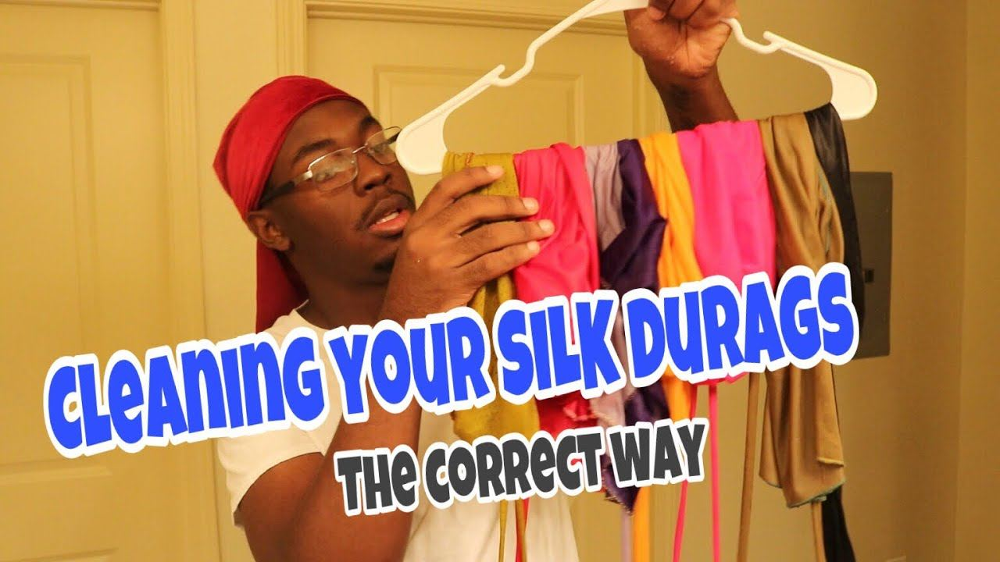

How to Wash a Silky Durag: Keep the Sheen, Lose the Buildup
A silky durag picks up everything your head produces — oil, sweat, product — and everything your pillow offers back. Wash it wrong and the sheen dies: harsh detergent, hot water, and a dryer cycle will dull satin weave in a handful of washes. Wash it right and a silky durag keeps its shine for a year of nightly wear. Trendsetterwill Tv's (@TrendsetterwillTv) silk-cleaning tutorial in the video below demonstrates the gentle method. This guide sets out the full routine for silky durags specifically.
How often, honestly
Nightly worn, a silky durag wants washing every three to four wears — sooner than most people think. The test is not visible dirt; it is the faint stiffness and the smell that only appears when it warms up on your head. Scalp oil oxidises in the fabric and, left for weeks, becomes the permanent funk that no wash fully removes.
This frequency is exactly why rotations exist: two or three silkies in cycle means one is always clean, and each gets washed on rhythm without ever leaving you bare-headed at night. Wash day for durags pairs naturally with wash day for hair.
The hand-wash method
Cool to lukewarm water in a basin, a few drops of mild detergent, durag in. Let it soak five minutes — soaking does the work so your hands do not have to — then squeeze the fabric gently through itself, paying attention to the band area and the tails where oil concentrates. Never scrub satin against itself and never wring it: friction and twisting are what rough the weave and kill the shine.
Rinse in clean cool water until it runs clear and the fabric feels slick rather than soapy. If your water is hard and leaves the fabric dull, a final rinse with a splash of white vinegar in the basin restores the feel — an old silk-keeper's trick that works on satin weave just as well.
Drying and the wrinkle rule
Lay the durag flat on a towel, smooth it into shape with your palms — front edge straight, tails aligned — and let it air-dry. Flat drying is the wrinkle rule: a silky durag dried in shape needs no ironing, and ironing satin is a risk you never need to take.
Keep it out of the dryer entirely. Heat is cumulative damage to the weave and to any elastic in the band. Ten minutes of flat-laying buys months of sheen — the best trade in all of durag care.
Watch: How To Clean Silk Durags | Tutorial
Video: “How To Clean Silk Durags | Tutorial” by Trendsetterwill Tv (@TrendsetterwillTv) · Watch on YouTube
Shop the gear
Everything in this guide runs on the right gear: a durag that holds compression without slipping, a cap that stays put, and fabric that treats your hair right. The durag.store launch lineup is built to that standard — dual-layer construction, long tails, and stitching made to survive the routine. Join the launch list and use code GOLDSTANDARD for 15% off your first order.
Keep learning
- How to Wash a Velvet Durag: Pile Care Without Crushing It — Basic · Durag Care
- Making Your Durag Last: The Habits That Double Its Life — Intermediate · Durag Care
- Storing Your Rotation: Organising Durags, Caps and Bonnets — Intermediate · Durag Care
Sources: Video — “How To Clean Silk Durags | Tutorial” by Trendsetterwill Tv (@TrendsetterwillTv), youtube.com. Guide written by the durag.store Wave Lab.